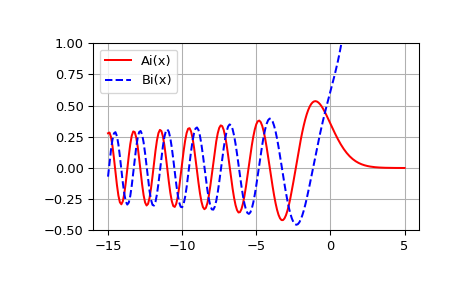

scipy.special.airy¶
-
scipy.special.airy(z) = <ufunc 'airy'>¶ Airy functions and their derivatives.
- Parameters
- zarray_like
Real or complex argument.
- Returns
- Ai, Aip, Bi, Bipndarrays
Airy functions Ai and Bi, and their derivatives Aip and Bip.
See also
airyeexponentially scaled Airy functions.
Notes
The Airy functions Ai and Bi are two independent solutions of
\[y''(x) = x y(x).\]For real z in [-10, 10], the computation is carried out by calling the Cephes [1]
airyroutine, which uses power series summation for small z and rational minimax approximations for large z.Outside this range, the AMOS [2] zairy and zbiry routines are employed. They are computed using power series for \(|z| < 1\) and the following relations to modified Bessel functions for larger z (where \(t \equiv 2 z^{3/2}/3\)):
\[ \begin{align}\begin{aligned}Ai(z) = \frac{1}{\pi \sqrt{3}} K_{1/3}(t)\\Ai'(z) = -\frac{z}{\pi \sqrt{3}} K_{2/3}(t)\\Bi(z) = \sqrt{\frac{z}{3}} \left(I_{-1/3}(t) + I_{1/3}(t) \right)\\Bi'(z) = \frac{z}{\sqrt{3}} \left(I_{-2/3}(t) + I_{2/3}(t)\right)\end{aligned}\end{align} \]References
- 1
Cephes Mathematical Functions Library, http://www.netlib.org/cephes/
- 2
Donald E. Amos, “AMOS, A Portable Package for Bessel Functions of a Complex Argument and Nonnegative Order”, http://netlib.org/amos/
Examples
Compute the Airy functions on the interval [-15, 5].
>>> from scipy import special >>> x = np.linspace(-15, 5, 201) >>> ai, aip, bi, bip = special.airy(x)
Plot Ai(x) and Bi(x).
>>> import matplotlib.pyplot as plt >>> plt.plot(x, ai, 'r', label='Ai(x)') >>> plt.plot(x, bi, 'b--', label='Bi(x)') >>> plt.ylim(-0.5, 1.0) >>> plt.grid() >>> plt.legend(loc='upper left') >>> plt.show()
